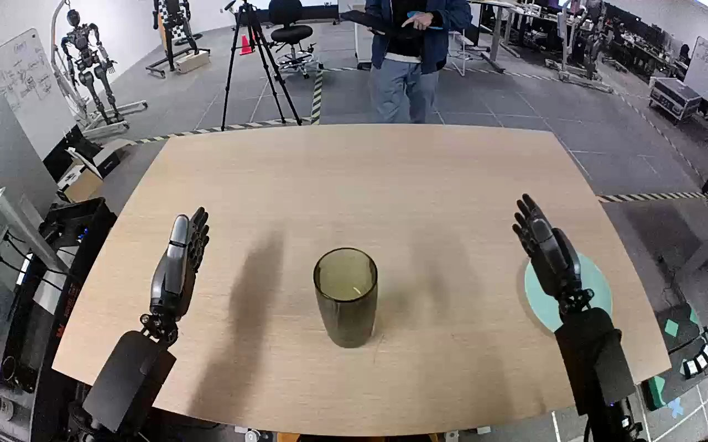

NVIDIA GR1 · 47
Video 47

Visual review action_review.json
{
"prompt_protocol": "humanoid_action_v1",
"prompt_provenance": "visually_authored_from_video_and_initial_frame",
"reviewed_contact_sheets": [
"sheet_001.jpg"
],
"inspected_frame_stride": 2,
"inspected_sampled_frame_count": 60,
"initial_scene": "A translucent green cylindrical cup stands near the center of the tan tabletop; an empty teal plate is to its right. Both robot forearms enter from the near/camera side with open hands. The body and shoulders are outside the image.",
"observed_sequence": [
{
"start_frame": 0,
"end_frame": 18,
"action": "Cup remains on tabletop; both hands open near the near edge of the table.",
"confidence": "high"
},
{
"start_frame": 19,
"end_frame": 48,
"action": "Right forearm reaches inward toward the green cup, with fingers and thumb spreading around its upper side. Left hand remains out of contact.",
"confidence": "high"
},
{
"start_frame": 49,
"end_frame": 66,
"action": "Right fingers curl at the cup upper wall/rim while thumb opposes on the lower visible side, securing the cup and beginning to lift it.",
"confidence": "high"
},
{
"start_frame": 67,
"end_frame": 94,
"action": "Right arm lifts the cup clearly off the tabletop and carries it rightward toward the teal plate. The left hand stays open and does not support the cup or plate.",
"confidence": "high"
},
{
"start_frame": 95,
"end_frame": 113,
"action": "Right hand lowers the cup over the teal plate; the cup base reaches the plate while fingers continue to hold its upper portion.",
"confidence": "high"
},
{
"start_frame": 114,
"end_frame": 119,
"action": "Right fingers extend and open away from the cup. Cup base remains on the plate; cup is angled and the open hand remains immediately beside its upper side at the final frame.",
"confidence": "high"
}
],
"arm_hand_roles": {
"right": "Active grasping, lifting, transporting and lowering hand; opens its fingers once cup base is on teal plate.",
"left": "Open and idle on the opposite side; does not touch the cup or plate and provides no coordinated support.",
"coordination": "Single-handed manipulation; no hand-to-hand transfer or human physical assistance."
},
"anatomical_side_evidence": {
"description": "Both forearms project forward from the camera-side lower edge toward the same tabletop. The active forearm is the robot-side right member of this pair, and its thumb opposes the finger group inward/leftward as seen clearly during grasp at frame 64. This paired near-side forward-arm arrangement and thumb anatomy establish robot-relative right, rather than treating a frontal image-right arm as automatically right. The opposite hand is correspondingly robot-relative left.",
"confidence": "high",
"visibility_limit": "Torso and shoulder attachments are outside the frame; naming is grounded in visible bilateral forearm orientation and handedness, corroborating the source annotation."
},
"terminal_state": "The green cup base is on the teal plate. The cup is slightly tilted, and the right hand has opened beside it. The left hand remains open away from the object. No later settling or full withdrawal is visible.",
"uncertainties": [
"The final cup is slightly tilted and the open right hand remains immediately adjacent to its rim; its later fully unsupported settling and final upright stability are outside the visible sequence."
],
"annotation_discrepancies": [],
"evidence_frame_indices": [
0,
50,
64,
78,
100,
114,
116,
119
],
"selected_execution_status": "success",
"execution_status_evidence": "Cup is lifted from table, transported onto the teal plate and hand opens at the filmed ending; success refers to the visible placement, without claiming later stable settling.",
"inspection_coverage": {
"full_sequence_sampled": "All 60 decoded even-numbered frames from 0 through 118 visually inspected in sheet_001.jpg.",
"native_frames": [
50,
64,
78,
100,
114,
116,
119
],
"source_initial_png_inspected": true,
"native_resolution": [
1280,
800
]
},
"video_id": "47",
"dataset": "NVIDIA_GR1_100",
"dedicated_review_agent": "review_gr1_47",
"review_source_video": "NVIDIA_GR1_100/47/original/original.mp4",
"source_frame_count": 120,
"source_fps": 20.0,
"native_detail_frames": [
50,
64,
78,
100,
114,
116,
119
],
"world_model_prompt": "The robot grasps the green cup near its rim with its right hand and lifts it from the tabletop. It carries the cup to the teal plate, lowers it onto the plate, and opens its fingers, leaving the cup on the plate with the hand beside it. Keep the camera fixed; preserve robot geometry, physically valid joint motion, and normal gripper opening and closing.",
"original_task_instruction": "Use the right hand to pick up green cup from tan table to teal plate.",
"selected_segment": {
"start_frame": 0,
"end_frame_exclusive": 120,
"reason": "Complete original single-task reference; no cropping or trimming requested."
},
"source_video_sha256": "e173e4951d6bc4227b8edd495f533709995d2e5e24040f1c9c157889a038ae2d",
"review_completed_at": "2026-10-13T18:09:08.840400+00:00"
}